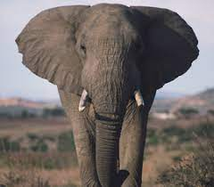

Python is the name given to a genus of constricting snakes. Such snakes are not venomous. its family is the Pythonidae. ... Pythons can range from 3 feet long in species like ball pythons to 29 feet in species like reticulated pythons. Regardless of length, pythons are bulky for their size. They have triangular-shaped heads and sharp, backward-curving teeth that they use to grab prey. Arboreal pythons' teeth are longer than their terrestrial cousins. Arboreal pythons also have extremely prehensile tails. Pythons are nonvenomous snakes found in Asia, Africa and Australia. Because they are not native to North or South America, they are considered Old World snakes. The word python can refer to both the family Pythonidae or the genus Python, found within Pythonidae. There are 41 species of python found within the family Pythonidae, according to the Reptile Database. Though both pythons and boas are large constrictors, they are separate families. ython is the name given to a genus of constricting snakes. Such snakes are not venomous. its family is the Pythonidae. Pythons are more closely related to boas than to any other snake family. Boulenger (1890) thought this group was a subfamily (Pythoninae) of the family Boidae (boas). However, boas produce live young, while pythons are oviparous: they lay eggs. Python can be found in Southeast Asia and Africa, and other members of the family are found in New Guinea and Australia. Pythons can range from 3 feet long in species like ball pythons to 29 feet in species like reticulated pythons. Python is one of eight genera in the family. They all have a rather similar life style. Most members of the family are ambush predators: they stay motionless in a camouflaged position, and then strike suddenly at passing prey. They wrap their body round the prey and squeeze. To kill its prey, the python squeezes it to death, then swallows it whole. Larger pythons can prey on animals as large as a full-grown deer. In Africa, there are pythons that eat gazelles. Most of their prey is much smaller than that. Pythons may take several days or even weeks to fully digest prey. Despite their size, pythons are rarely dangerous to humans. Python can be up to 900 cm long and weigh up to 90 kg, but males are much smaller and lighter than females. The python can live up to 30 years. The breeding time is between 60 or 70 days. Research indicates that all snakes, including pythonids, are descended from a venomous ancestor.
![]()
Bats are mammals of the order Chiroptera.[a] With their forelimbs adapted as wings, they are the only mammals capable of true and sustained flight. Bats are more manoeuvrable than birds, flying with their very long spread-out digits covered with a thin membrane or patagium. The smallest bat, and arguably the smallest extant mammal, is Kitti's hog-nosed bat, which is 29–34 millimetres (1+1⁄8–1+3⁄8 inches) in length, 150 mm (6 in) across the wings and 2–2.6 g (1⁄16–3⁄32 oz) in mass. The largest bats are the flying foxes, with the giant golden-crowned flying fox, Acerodon jubatus, reaching a weight of 1.6 kg (3+1⁄2 lb) and having a wingspan of 1.7 m (5 ft 7 in). The second largest order of mammals after rodents, bats comprise about 20% of all classified mammal species worldwide, with over 1,400 species. These were traditionally divided into two suborders: the largely fruit-eating megabats, and the echolocating microbats. But more recent evidence has supported dividing the order into Yinpterochiroptera and Yangochiroptera, with megabats as members of the former along with several species of microbats. Many bats are insectivores, and most of the rest are frugivores (fruit-eaters) or nectarivores (nectar-eaters). A few species feed on animals other than insects; for example, the vampire bats feed on blood. Most bats are nocturnal, and many roost in caves or other refuges; it is uncertain whether bats have these behaviours to escape predators. Bats are present throughout the world, with the exception of extremely cold regions. They are important in their ecosystems for pollinating flowers and dispersing seeds; many tropical plants depend entirely on bats for these services. Bats provide humans with some direct benefits, at the cost of some disadvantages. Bat dung has been mined as guano from caves and used as fertiliser. Bats consume insect pests, reducing the need for pesticides and other insect management measures. They are sometimes numerous enough and close enough to human settlements to serve as tourist attractions, and they are used as food across Asia and the Pacific Rim. However, fruit bats are frequently considered pests by fruit growers. Due to their physiology, bats are one type of animal that acts as a natural reservoir of many pathogens, such as rabies; and since they are highly mobile, social, and long-lived, they can readily spread disease among themselves. If humans interact with bats, these traits become potentially dangerous to humans. Depending on the culture, bats may be symbolically associated with positive traits, such as protection from certain diseases or risks, rebirth, or long life, but in the West, bats are popularly associated with darkness, malevolence, witchcraft, vampires, and death.
The lion (Panthera leo) is a species in the family Felidae and a member of the genus Panthera. It has a muscular, deep-chested body, short, rounded head, round ears, and a hairy tuft at the end of its tail. It is sexually dimorphic; adult male lions have a prominent mane. With a typical head-to-body length of 184 to 208 cm (72 to 82 in) they are larger than females at 160 to 184 cm (63 to 72 in). It is a social species, forming groups called prides. A lion pride consists of a few adult males, related females and cubs. Groups of female lions usually hunt together, preying mostly on large ungulates. The lion is an apex and keystone predator; although some lions scavenge when opportunities occur and have been known to hunt humans, the species typically does not. Typically, the lion inhabits grasslands and savannas, but is absent in dense forests. It is usually more diurnal than other wild cats, but when persecuted, it adapts to being active at night and at twilight. During the Neolithic period, the lion ranged throughout Africa, Southeast Europe, and Western and South Asia, but it has been reduced to fragmented populations in sub-Saharan Africa and one population in western India. It has been listed as Vulnerable on the IUCN Red List since 1996 because populations in African countries have declined by about 43% since the early 1990s. Lion populations are untenable outside designated protected areas. Although the cause of the decline is not fully understood, habitat loss and conflicts with humans are the greatest causes for concern. One of the most widely recognised animal symbols in human culture, the lion has been extensively depicted in sculptures and paintings, on national flags, and in contemporary films and literature. Lions have been kept in menageries since the time of the Roman Empire and have been a key species sought for exhibition in zoological gardens across the world since the late 18th century. Cultural depictions of lions were prominent in Ancient Egypt, and depictions have occurred in virtually all ancient and medieval cultures in the lion's historic and current range

The domestic dog (Canis familiaris or Canis lupus familiaris) is a domesticated descendant of the wolf. The dog derived from an ancient, extinct wolf, with the modern grey wolf being the dog's nearest living relative. The dog was the first species to be domesticated, by hunter–gatherers over 15,000 years ago, before the development of agriculture. Their long association with humans has led dogs to be uniquely adapted to human behavior, leading to a large number of domestic individuals and the ability to thrive on a starch-rich diet that would be inadequate for other canids. The dog has been selectively bred over millennia for various behaviors, sensory capabilities, and physical attributes. Dogs are sub classified into breeds, which vary widely in shape, size, and color. They perform many roles for humans, such as hunting, herding, pulling loads, protection, assisting police and the military, companionship, therapy, and aiding disabled people. This influence on human society has given them the sobriquet of "man's best friend." One of the most faithful and helpful animals on the earth is a dog. Dogs consist of four feet for running and jumping. They have two eyes, ears, and one tail, which makes them look beautiful. The stunning look of a dog also consists of one major part that is sharp teeth. Dogs can run very fast. Thus, they can help you to exercise more. They can eat large amounts of meat, milk, green vegetables, fruits, rice, fish, and many other things. Yet, all the sweet items are harmful to the health of dogs. Dogs are knowledgeable pets. Thus, they keep a quick watch on the people at night. Many military and police workers use trained dogs for catching thieves and criminals. The smelling power of dogs is mighty and strong. Thus, they can sense things from far after they smell them once. Dogs consist of very friendly and over protecting nature. ll are familiar that a dog is a four feet pet that consists of thin legs. It is a common fact that a dog is a household animal that helps their owners in many works. Dogs can bite criminals and strangers for protecting their owners. People can never underestimate the intelligence of a dog because they can catch every criminal. Also, large communities conduct dog events worldwide. Thus, every year, people can see different and unique breeds in this massive event.

A cat is a domestic animal but there are wild cats too. Cats are found in various colours. The eyes of the cat which are of gray colour shine at night. A cat has sharp claws. The food of the cat is rats, pigeons and birds. She is fond of milk. It can climb up a tree and can jump from one roof to the other. When she mews the rats run away, and she also kills them. In this way she keeps rats away from our house. She has soft fur. She gives birth to kittens once in a year. She is very afraid of dogs.Cat is a wonderful domestic animal. She is playful also. But whenever she is put in trouble she becomes very dangerous. It attacks even a man and kills him. But on the whole we can say that a cat is a loving animal. The cat (Felis catus) is a domestic species of small carnivorous mammal. It is the only domesticated species in the family Felidae and is often referred to as the domestic cat to distinguish it from the wild members of the family. A cat can either be a house cat, a farm cat or a feral cat; the latter ranges freely and avoids human contact. Domestic cats are valued by humans for companionship and their ability to hunt rodents. About 60 cat breeds are recognized by various cat registries. The cat is similar in anatomy to the other felid species: it has a strong flexible body, quick reflexes, sharp teeth and retractable claws adapted to killing small prey. Its night vision and sense of smell are well developed. Cat communication includes vocalizations like meowing, purring, trilling, hissing, growling and grunting as well as cat-specific body language. A predator that is most active at dawn and dusk, the cat is a solitary hunter but a social species. It can hear sounds too faint or too high in frequency for human ears, such as those made by mice and other small mammals. It secretes and perceives pheromones. Female domestic cats can have kittens from spring to late autumn, with litter sizes often ranging from two to five kittens. Domestic cats are bred and shown at events as registered pedigreed cats, a hobby known as cat fancy. Failure to control breeding of pet cats by spaying and neutering, as well as abandonment of pets, resulted in large numbers of feral cats worldwide, contributing to the extinction of entire bird, mammal, and reptile species, and evoking population control.Cats were first domesticated in the Near East around 7500 BC. It was long thought that cat domestication was initiated in ancient Egypt, as since around 3100 BC veneration was given to cats in ancient Egypt. As of 2021 there are an estimated 220 million owned and 480 million stray cats in the world. As of 2017, the domestic cat was the second-most popular pet in the United States, with 95 million cats owned. In the United Kingdom, 26% of adults have a cat with an estimated population of 10.9 million pet cats as of 2020.

A horse is a good-looking animal. The mane on its neck, its glossy skin and the symmetrical shape of the body – all make it fine animal. It is a strong, healthy and tall animal. It has four legs, two eyes, two ears and a bushy tail. Horses are of different colors, sizes, and shapes. It may be of red, brown, grey, black and white, and a mixture of such colors. Its body is covered with short glossy hair. Its hoofs are hard and solid. Horses eat grass, oats, gram, leaves, food-grains and other vegetables. Where found? Horse is found in almost all countries. The Arabian variety is very handsome. English and Australian horses are of great use in races. The Burma ponies are very small animals. It can move along at a rapid rate. Its hoofs are well adapted to rough roads. Its food consists of grass, gram, oats, and other vegetables. Usefulness: It is a very useful animal. It is very bold, strong and clever. So it was used in the battlefield in the past. In former days, the reputation of warriors depended on their war-horses. Even now, horses carry provisions for the army, at the places where motor-lorries cannot reach. Horses are noted for their faithfulness, strength, agility and gentleness and are of immense service to man. The horse saves its master’s life even at the cost of its own life. The story of Rana Pratap Singh’s famous war-horse ‘Chaitak’ is a typical example of the faithfulness of horses. Horse carries us on its back and draws carriage. It can even plough the field. Horse racing and horse riding are very popular sports even today. Now it is used mainly in army, circus show, and polo game.
![]()
Rabbits are small mammals with fluffy, short tails, whiskers and distinctive long ears. There are more than 30 species around the world, and while they live in many different environments, they have many things in common. Rabbits and hares are in the same taxonomic family, Leporidae, but they are in different genera. There are 11 genera within the family, but the term “true hares” refers only to species in the genus Lepus; all others are rabbits. Also, the American Rabbit Breeders Association (ARBA) recognizes 49 rabbit breeds. Some rabbits are about the size of a cat, and some can grow to be as big as a small child. Small rabbits, such as pygmy rabbits, can be as little as 8 inches (20 centimeters) in length and weigh less than a pound. Larger species grow to 20 inches (50 cm) and more than 10 lbs. (4.5 kilograms). According to Dr. Lianne McLeod, a veterinarian, in a column for The Spruce website, the largest rabbit breeds are the checkered giant, over 11 lbs. (5 kg); Flemish giant, 13 lbs. (5.9 kg) and over; giant papillon, 13 to 14 lbs. 5.9 to 6.3 kg); and giant chinchilla, 12 to 16 lbs. (5.4 to 7.2 kg). The world's longest rabbit, according to Guinness World Records, is a Flemish giant that clocked in at 4 feet 3 inches (129 cm) and 49 pounds (22 kg). Small rabbit breeds include the Britannia Petite, under 2.5 lbs. (1.1 kg); Netherland dwarf, under 2.5 lbs.; dwarf hotot, under 3 lbs. (1.3 kg); and Himalayan, 2.5 to 4.5 lbs. (1.1 to 2 kg). Rabbits are known for their insatiable reproductive habits for good reason. They breed three to four times each year. This is because only 15 percent of baby rabbits make it to their first birthday, according to the Animal Diversity Web (ADW). So, to ensure that the population grows, rabbits have more babies. Each pregnancy produces three to eight babies, called kittens or kits. ("Bunny" is just an affectionate name for a rabbit, young or adult, according to Small Pet Select.) After four to five weeks, a kit can care for itself. In two or three months it is ready to start a family of its own. If there is a lack of natural predators, an area can quickly become overrun with rabbits. Rabbits are herbivores. This means that they have a plant-based diet and do not eat meat. Their diets include grasses, clover and some cruciferous plants, such as broccoli and Brussels sprouts. They are opportunistic feeders and also eat fruits, seeds, roots, buds, and tree bark, according to ADW. While originally from Europe and Africa, rabbits are now found all over the world. They occupy most of the world’s land masses, except for southern South America, the West Indies, Madagascar, and most islands southeast of Asia, according to ADW. Although originally absent from South America, Australia, New Zealand, Java, rabbits have been introduced to these locations during the last few centuries.

Cows are one of the most important animals to man. They are categorized under livestock and help us in many ways. Cows are terrestrial mammals and feed on grasses and leaves. Man has been dependent on cows for many centuries for food, hide, and other products. Cows are 4-legged animals that are herbivorous. They feed on plants. They are big animals that can reach a height of 3-4 feet. We get plenty of food products from cows like milk, cheese, yogurt, fat, etc. They are mammals who give birth to young ones. The babies of cows are known as calves. There are many varieties of cows; some of them have white, plain skin, while others have a spotted body. Most of the cows have thick coats that are 4-layers deep. Cows are of great importance to man. We are dependent on them for plenty of products without which we cannot imagine our lives. Cows are herbivorous animals that feed on grasses and plants. Their bodies are large, because of which they have enormous weights. To support this weight, cows’ legs have hooves that have been made secure due to keratin in them. This allows them to walk correctly. We need cows for many purposes like food, clothes, and cosmetics. In food, cows provide us with milk, cheese, butter, and meat. They are terrestrial mammals and give birth to young ones known as calves. Cows are diurnal animals and usually sleep at night. They have a great metabolism and require a lot of nutrition per day. The food of cows is referred to as fodder. Cows are kept in farms where they are needed for providing milk. These are sensitive animals and need a clean and dry place for staying. Plenty of large farms provide them with proper hygienic conditions to live in and take care of their nutrition. Few animals on earth are as important as cows. They have been tamed and used by man for thousands of years. We mainly depend on them for our food. In some countries, people use cow’s meat as a significant source of food. Cows are female cattle, and their male counterparts are known as a bull. They are domestic, bovine animals that feed on plants. The average size and color of a cow depending on its type of breed. There are many breeds of cows. Some of which are more popular like Jersey. The milk-producing capacity of cows is also dependent on its type of breed. Larger cows produce more milk, but it is not always true. Cows have excellent grazing capabilities. Due to this, certain protected grasslands have been declared as anti-grazing zones. Adult cows have a set of 32 teeth. There are no upper-level incisors’ or canines in a mature cow. Their teeth have smooth surfaces with moon-shaped ridges that have been specially designed for an herbivorous lifestyle. Cows chew their food all the time. They can even take it out from their gut to chew it again properly.
Elephants are the largest land mammals on earth and have distinctly massive bodies, large ears, and long trunks. They use their trunks to pick up objects, trumpet warnings, greet other elephants, or suck up water for drinking or bathing, among other uses. Both male and female African elephants grow tusks and each individual can either be left- or right-tusked, and the one they use more is usually smaller because of wear and tear. Elephant tusks serve many purposes. These extended teeth can be used to protect the elephant's trunk, lift and move objects, gather food, and strip bark from trees. They can also be used for defense. During times of drought, elephants even use their tusks to dig holes to find water underground. The African elephant is the largest of all elephant species and weighs up to eight tons. Two genetically different African subspecies exist: the savanna and the forest elephant, with a number of characteristics that differentiate them both.Asian elephants differ in several ways from their African relatives, with more than 10 distinct physical differences between them. For example, Asian elephants are smaller than their African cousins, and their ears are smaller compared to the large fan-shaped ears of the African species. Only some male Asian elephants have tusks, while both male and female African elephants grow tusks. Led by a matriarch, elephants are organized into complex social structures of females and calves, while male elephants tend to live in isolation or in small bachelor groups. A single calf is born to a female once every four to five years and after a gestation period of 22 months—the longest of any mammal. Calves are cared for by the entire herd of related females. Female calves may stay with their maternal herd for the rest of their lives, while males leave the herd as they reach puberty. Elephants need extensive land areas to survive and meet their ecological needs, which includes food, water, and space. On average, an elephant can feed up to 18 hours and consume hundreds of pounds of plant matter in a single day. As a result, as they lose habitat, they often come into conflict with people in competition for resources.
The tiger (Panthera tigris) is the largest living cat species and a member of the genus Panthera. It is most recognisable for its dark vertical stripes on orange-brown fur with a lighter underside. It is an apex predator, primarily preying on ungulates such as deer and wild boar. It is territorial and generally a solitary but social predator, requiring large contiguous areas of habitat, which support its requirements for prey and rearing of its offspring. Tiger cubs stay with their mother for about two years, before they become independent and leave their mother's home range to establish their own. The tiger was first scientifically described in 1758 and once ranged widely from the Eastern Anatolia Region in the west to the Amur River basin in the east, and in the south from the foothills of the Himalayas to Bali in the Sunda Islands. Since the early 20th century, tiger populations have lost at least 93% of their historic range and have been extirpated from Western and Central Asia, the islands of Java and Bali, and in large areas of Southeast and South Asia and China. Today, the tiger's range is fragmented, stretching from Siberian temperate forests to subtropical and tropical forests on the Indian subcontinent and Sumatra. The tiger is listed as Endangered on the IUCN Red List. As of 2015, the global wild tiger population was estimated to number between 3,062 and 3,948 mature individuals, with most of the populations living in small isolated pockets. India currently hosts the largest tiger population. Major reasons for population decline are habitat destruction, habitat fragmentation and poaching. Tigers are also victims of human–wildlife conflict, particularly in range countries with a high human population density. The tiger is among the most recognisable and popular of the world's charismatic megafauna. It featured prominently in the ancient mythology and folklore of cultures throughout its historic range, and continues to be depicted in modern films and literature, appearing on many flags, coats of arms and as mascots for sporting teams. The tiger is the national animal of India, Bangladesh, Malaysia and South Korea.